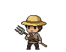
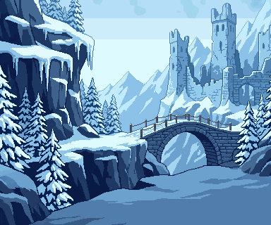
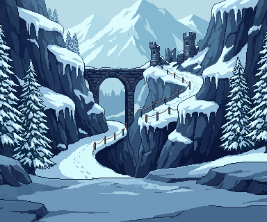
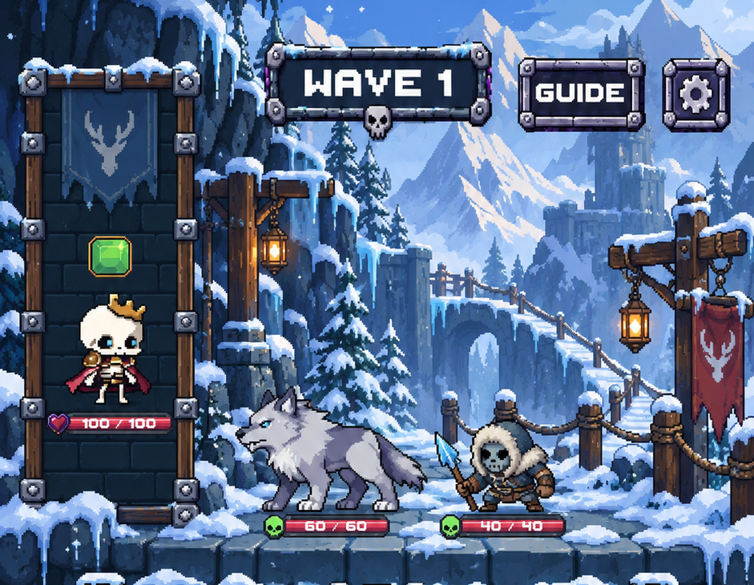

Review candidate • isolated branch • no merge • production Frostwake binding preserved
The selected sheltered pass adds snow shelves, icicles, pines, a distant stone bridge and ruined towers. PixelLab generated two text-only 384×320 candidates. Candidate B received a LibreSprite cleanup from 40 to 28 colors, with no resampling. The before/after images below are actual Unity Game-scene captures with three live enemies and Rattlebones. The current floor, portrait, board, buttons and lower HUD remain unchanged; their later stages have not begun.
Screenshots are reduced to fit this page. Open the original image for full-resolution inspection. Source assets below include true 1× views.
Known baseline issue: the existing 360×640 camera warning and crowded upper labels remain. This stage changes the backdrop only.



Rendering discipline only; environment hues remain alpine.



PixelLab usage: 2 Pro calls × 25 = 50 subscription generations. Balance: 4,950 remaining. No reference-image uploads.